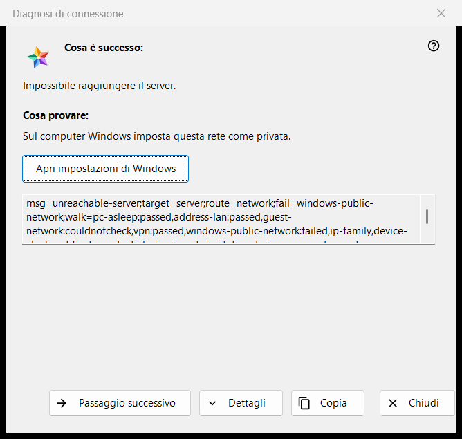
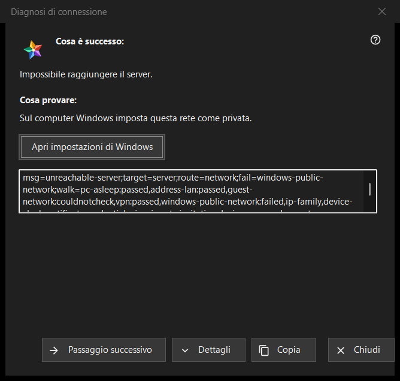

Diagnosi di connessione
Scopo
Spiega perché un server o un dispositivo non si raggiunge e propone che cosa provare, un passaggio alla volta. Non cambia nessuna impostazione del computer o di Windows. Si apre da «Perché non si connette?..» nel menu «Altro» dell'elenco delle risorse (per una riga selezionata), da una voce di server in «I miei dispositivi» che sta accedendo di nuovo, mostra un certificato cambiato o non riesce a connettersi, e da sola quando l'apertura di una risorsa fallisce.


In questo ordine
- Leggi «Cosa è successo:».
- Prova ciò che dice «Cosa provare:».
- Se non è quella la causa, premi «Passaggio successivo».
- Premi «Dettagli» se qualcuno chiede i codici e «Copia» per consegnarli.
- Chiudi la finestra.
Gli elementi
Cosa è successo
Una frase sul fallimento, ad esempio «Impossibile raggiungere il server.», «Nome utente o password non corretti.» o «Questo server non corrisponde a quello a cui ti eri connesso prima.». Dipende dal tipo di fallimento che ha aperto la finestra.
Cosa provare
La finestra parte dal primo passaggio che nel controllo è fallito, oppure dal primo passaggio se nessuno è fallito. Passaggi tipici: svegliare il dispositivo su cui gira il server, verificare che i due dispositivi siano sulla stessa rete, lasciare un Wi-Fi ospiti, spegnere per un momento una VPN, impostare la rete di Windows come privata, controllare il server da un'altra rete, impostare data e ora corrette, confermare una nuova impronta, riscrivere il login e la password. L'ultimo passaggio dice che solo l'amministratore del server può risolvere il problema.
Passaggio successivo e Impostazioni di Windows
«Passaggio successivo» scorre i passaggi e scompare all'ultimo. Per i due passaggi che le impostazioni di Windows possono risolvere, il profilo di rete e l'orologio, un pulsante «Apri impostazioni di Windows» apre la pagina corrispondente di Windows; il programma non cambia nulla da sé.
Dettagli e Copia
«Dettagli» mostra o nasconde un campo di sola lettura con i codici della diagnosi: il tipo di fallimento, la destinazione, il percorso, il passaggio fallito e i passaggi percorsi. Non contiene mai un indirizzo, un login, una password o un'impronta. «Copia» mette quella riga negli appunti e la finestra dice «Codici di diagnosi copiati negli appunti.»
Come funziona il controllo
Il controllo vale solo per la connessione che hai provato e si limita a leggere: prova a raggiungere l'host e la porta ed esamina lo stato della rete, gli adattatori VPN, il profilo di rete di Windows, la famiglia di indirizzi, l'orologio e il certificato. Si ferma al primo passaggio fallito, e un controllo che non è stato possibile eseguire non viene mai contato come superato o fallito.